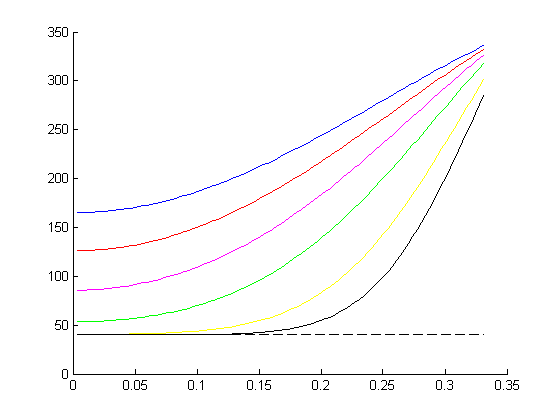
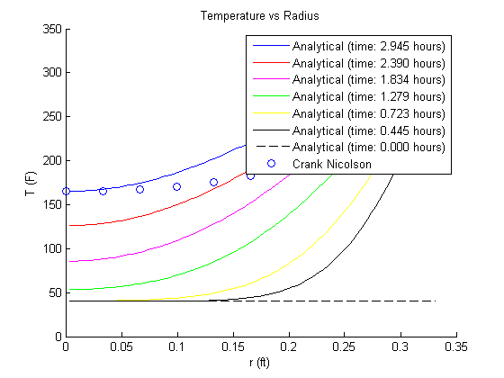

Contents
% MAE 315 Project 1 % Group 5 % 11/18/2015 % given Ti = 40; %(F) Tinf = 350; %(F) Tf = 165; %(F) thetaf = (Tf-Tinf)/(Ti-Tinf); %dimensionless temperature h = 12.5; %Btu/hr-ft^2-F k = 0.287; %Btu/hr-ft-F alpha = 1.40e-6; %ft^2/s r0 = 0.331; %ft Bi = h*r0/k;
Analytical Solution
lambda values
fb = @(x) 1-x.*cot(x)-Bi; lambda = zeros(6,1); lambda(1) = fzero(fb, 3); lambda(2) = fzero(fb, 6); lambda(3) = fzero(fb, 9); lambda(4) = fzero(fb, 12); lambda(5) = fzero(fb, 15); lambda(6) = fzero(fb, 18); % series solution for center temperature a = 4*(sin(lambda)-lambda.*cos(lambda))./(2*lambda-sin(2*lambda)); fth1 = @(x) a(1)*exp(-lambda(1)^2*x)-thetaf; fth2 = @(x) fth1(x)+a(2)*exp(-lambda(2)^2*x); fth3 = @(x) fth2(x)+a(3)*exp(-lambda(3)^2*x); fth4 = @(x) fth3(x)+a(4)*exp(-lambda(4)^2*x); fth5 = @(x) fth4(x)+a(5)*exp(-lambda(5)^2*x); fth6 = @(x) fth5(x)+a(6)*exp(-lambda(6)^2*x); % Fourier Numbers tau = zeros(6,1); tau(1) = fzero(fth1, 0.1); tau(2) = fzero(fth2, 0.1); tau(3) = fzero(fth3, 0.1); tau(4) = fzero(fth4, 0.1); tau(5) = fzero(fth5, 0.1); tau(6) = fzero(fth6, 0.1); % time values time = tau*r0^2/alpha; % plot r = linspace(0, r0); t = [time(6) time(6)-2e3 time(6)-4e3 time(6)-6e3 time(6)-8e3 time(6)-9e3]; figure; hold on; for j = 1:6 Fo = alpha*t(j)/r0^2; theta = zeros(size(r)); for k = 1:6 theta = theta+a(k)*exp(-lambda(k)^2*Fo)*sin(lambda(k)*r/r0)./(lambda(k)*r/r0); end T = Tinf+(Ti-Tinf)*theta; switch j case 1 line = 'b'; case 2 line = 'r'; case 3 line = 'm'; case 4 line = 'g'; case 5 line = 'y'; case 6 line = 'k'; end plot(r, T, line); end plot(r, Ti*ones(length(r),1), '--k');
Crank Nicolson Method
given
dr = r0/10; dt = 1; lambda = alpha*dt/dr^2; n = 2e5; %time levels r = (0:dr:r0)'; % numerical calculations T = zeros(11,n); a = zeros(11,11); b = zeros(11,11); c = zeros(11,1); T(1:11,1) = Ti; %initial conditions rhalf = zeros(10,1); %half radii for j = 1:10 rhalf(j) = r(j)+0.5*dr; end c(11,1) = 4*h*r(11)^2*dr/k*Tinf; for j = 2:n % calculating "a" matrix a(1,2) = -(rhalf(1)^2+r(1)^2); a(1,1) = rhalf(1)^2+r(1)^2+2*r(1)^2/lambda; for k = 2:10 a(k,k+1) = -rhalf(k)^2; a(k,k) = rhalf(k)^2+rhalf(k-1)^2+2*r(k)^2/lambda; a(k,k-1) = -rhalf(k-1)^2; end a(11,11) = 2*h*r(11)^2*dr/k+r(11)^2+rhalf(10)^2+2*r(11)^2/lambda; a(11,10) = -(r(11)^2+rhalf(10)^2); % calculating "b" matrix b(1,2) = rhalf(1)^2+r(1)^2; b(1,1) = -(rhalf(1)^2+r(1)^2-2*r(1)^2/lambda); for k = 2:10 b(k,k+1) = rhalf(k)^2; b(k,k) = -(rhalf(k)^2+rhalf(k-1)^2-2*r(k)^2/lambda); b(k,k-1) = rhalf(k-1)^2; end b(11,11) = -2*h*r(11)^2*dr/k-r(11)^2-rhalf(10)^2+2*r(11)^2/lambda; b(11,10) = r(11)^2+rhalf(10)^2; % calculating T T(1:11,j) = a\(b*T(1:11,j-1)+c); if T(1,j) >= Tf ifin = j; break; end end % plot plot(r, T(1:11,ifin), 'o'); title('Temperature vs Radius'); xlabel('r (ft)'); ylabel('T (F)'); legend({sprintf('Analytical (time: %.3f hours)', t(1)/3600) sprintf('Analytical (time: %.3f hours)', t(2)/3600) sprintf('Analytical (time: %.3f hours)', t(3)/3600) sprintf('Analytical (time: %.3f hours)', t(4)/3600) sprintf('Analytical (time: %.3f hours)', t(5)/3600) sprintf('Analytical (time: %.3f hours)', t(6)/3600) sprintf('Analytical (time: %.3f hours)', 0) 'Crank Nicolson'});